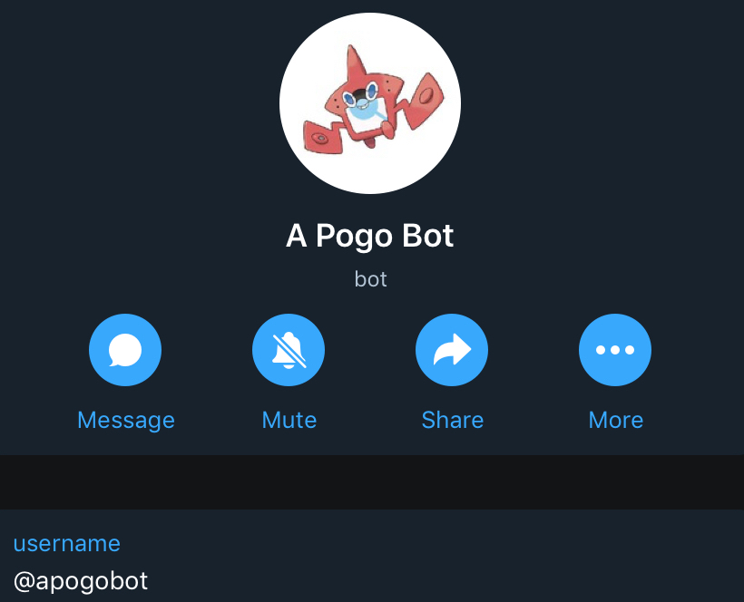

Einrichtung Telegram & Bot¶
In der Whatsapp Gruppenbeschreibung findet ihr die Links zur Telegram App für iOS und Android. Nutzt diese um die App herunterzuladen und zu installieren. Startet die App und gebt euren Namen ein. Führt anschließend die nachfolgenden Schritte durch.
1. Registrierung¶
Um Pokemon Benachrichtigungen per Push Meldung erhalten zu können, müsst ihr euch zunächst in der Gruppe „A Pogo Map“ dafür registrieren. Solltet ihr noch kein Mitglied sein, wendet euch bitte an einen Admin aus unserer WhatsApp Gruppe und lasst euch aufnehmen. Sendet dort anschließend die Nachricht:
/register
Achtet auf die Kleinschreibung des Befehls. Bei Erfolg kriegt ihr direkt im Anschluss eine Bestätigung vom Telegram Bot.
Die Telegram Gruppe hat nur eine einzige Funktion: Neuen Mitgliedern die Registrierung zu erlauben. Mehr passiert dort nicht. Sobald ihr eure Benachrichtigungen fertig eingerichtet und konfiguriert habt, könnt ihr die Registriergruppe auch gern wieder verlassen. Es ist nicht notwendig dort dauerhaft Mitglied zu sein. Alternativ könnt ihr die Gruppe auch stumm schalten. Bitte nutzt sie nicht zum Informationsaustausch.
2. Benachrichtigungs-Bot starten¶
Die Pokemon Benachrichtigungen erhaltet ihr über einen Bot per persönlicher Nachricht. Dieser hat keine Berechtigungen, mit euch ein Gespräch zu eröffnen. Daher müsst ihr ihm zunächst eine Nachricht senden bzw. starten.
Der Bot befindet sich in der Registriergruppe und heißt „A Pogo Bot“. Klickt ihn an und startet die Konversation.
{kind=link}
Die Kommunikation und Konfiguration der Benachrichtigungen erfolgt immer über persönliche Nachrichten zwischen dir und dem Bot A Pogo Bot!
Der Bot hört nur auf bestimmte Befehle, die alle mit einem Schrägstrich beginnen müssen. Welche Befehle zur Verfügung stehen, könnt ihr der Befehlsübersicht entnehmen.
Erfolgreich umgesetzte Befehle werden von dem Bot immer(!) bestätigt. Kommt keine Rückmeldung, wurde euer Befehl nicht korrekt erkannt oder der Bot hat einen Fehler.
3. Benachrichtigungen aktivieren¶
Da der Bot nicht nur für Holzminden sondern auch andere Regionen arbeitet, müsst ihr ihm zunächst mitteilen, für welche Regionen er euch Nachrichten schicken soll. Nutzt dafür den Befehl:
/area add holzminden
Die Pokemon Benachrichtigungen werden nur an euch verschickt, wenn das Pokemon im Radius eines gesetzten Standorts liegt. Daher muss als nächstes eure Position gesetzt werden:
/location holzminden
Anschließend könnt ihr dem Bot mitteilen, für welche Pokemon/Quests/Raids ihr Benachrichtigungen erhalten möchtet.
Ihr könnt dies nach euren eigenen Vorstellungen mit dem Befehl „/track“ gestalten. Jeder Track-Befehl muss zwingend die Angabe des Radius (ausgehend von eurer gesetzten Position Holzminden) enthalten. Dies geht über den Parameter „d3500“.
All eure getrackten Pokemon, Quests und Raids könnt ihr euch anzeigen lassen:
/tracked
Wer keine Lust hat all die Track-Befehle einzugeben, kann auf von uns erstellte Vorlagen zurückgreifen. Mehr dazu unter Tracklisten. Außerdem findet ihr eine umfangreiche Befehlsliste inkl. Erläuterungen in der Befehlsübersicht.
Hier noch ein paar Beispiele:
Beispiel 1 - Pokemon¶
Benachrichtigung für alle Kaumalat
/track kaumalat d3500
Alle Track-Befehle für Kaumalat können wieder entfernt werden mit:
/untrack kaumalat
Beispiel 2 - Pokemon¶
Benachrichtigung für Chaneira und Relaxo mit IV > 95 und mindestens Level 20
/track chaneira relaxo iv95 level20 d3500
Statt einzelner Pokemon funktioniert auch
/track everything iv95 d3500
Oder alles entfernen mit
/untrack everything
Bei langen Track-Listen ist es manchmal notwendig, den Untrack-Befehl 2x mal zu senden um die Liste wieder komplett zu bereinigen.
Beispiel 3 - Pokemon¶
Benachrichtigung für Wablu mit IV Kombination 0/14/15 und maximal Lvl 29 -> PvP!
/track wablu atk0 maxatk0 def14 maxdef14 sta15 maxsta15 maxlevel29 d3500
Beispiel 4 - Quest & Raid¶
Benachrichtigung für Pandir Quests und Darkrai Raid
/quest pandir d3500
/raid darkrai d3500
Die Benachrichtigung kann wieder deaktiviert werden mit:
/quest remove pandir
/raid remove darkrai